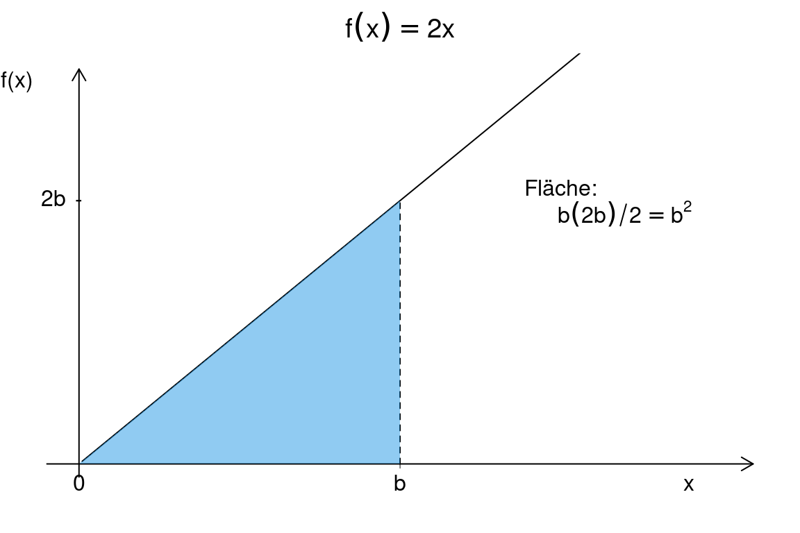

Kapitel 8 Lineare Gleichungssysteme
Viele ökonomische Modelle bauen auf linearen Gleichungssystemen auf:
- Produktionsplanung unter linearen Ressourcenbeschränkungen: Produktionsbeschränkung auf Maschine 1: 2 Stunden für eine Einheit von \(x\) und 3 Stunden für eine Einheit von \(y\) mit insgesamt 8 Stunden Verfügbarkeit: \(2x+3y = 8\). Produktionsbeschränkung auf Maschine 2: 4 Stunden für eine Einheit von \(x\) und 0,5 Stunden für eine Einheit von \(y\) mit insgesamt 8 Stunden Verfügbarkeit: \(4x+0,5 y = 8\).
Was ist die optimale Produktion?
- Finden des Marktgleichgewichts bei linearen Nachfrage- und Angebotsfunktionen: Inverse Nachfrage: \(p(q)=400-0,3q\) versus Angebot: \(p(q)=40+0,3q\).
Wie hoch ist der Gleichgewichtspreis?
- Kalibrierung von volkswirtschaftlichen Modellen (Suche das Gleichgewicht zwischen Einkommen \(Y\) und Konsum \(C\)):
\[\begin{align*} Y &= C+I+G\\ C&=C_0 +bY\\ I&=I_0+aY \end{align*}\]
für gegebene Anfangsinvestitionen \(I_0=50\), Konsum \(C_0=65\) und Staatsausgaben \(G=20\) sowie \(b=0,7\), \(a=0,1\) .
Wie hoch ist das Gleichgewicht zwischen Einkommen und Konsum?
\(\leadsto\) In diesem Kapitel werden wir die Methoden zur Lösung linearer Gleichungssysteme betrachten.
Definition 8.1 (Systeme linearer Gleichungen) Eine lineare Gleichung mit \(n\) Variablen („Unbekannten“) hat die Form:
\[a_1x_1 + a_2x_2 + + a_nx_n = b,\]
wodurch
\(a_1, ... , a_n\) und \(b\) bekannte Konstanten (z. B. Preise), sogenannte Parameter, sind und
\(x_1, ... , x_n\) bezeichnen die Variablen (z. B. Warenmengen).
Ein System linearer Gleichungen (LGS) besteht aus zwei oder mehr linearen Gleichungen. Eine Lösung ist eine Zuweisung von Variablen, sodass alle Gleichungen gleichzeitig wahr/erfüllt sind.
Frage:
Beispiel 8.1 (Lineares Produktionsmodell) Wir betrachten eine Volkswirtschaft mit \(n + 1\) Gütern.
Jedes der Güter \(1, . . . , n\) ist das Ergebnis eines Produktionsprozesses.
Ein Produktionsprozess ist durch eine Reihe von Gütermengen gekennzeichnet, die zur Herstellung einer Einheit des Produktionsguts erforderlich sind.
Gut \(0\) bezeichnet den Faktor Arbeit, der nicht durch einen Prozess produziert wird, sondern in jedem Produktionsprozess eingesetzt wird.
Die folgende Input-Output-Tabelle zeigt den Produktionsprozess für eine 3-Güter-Wirtschaft (ohne den Faktor Arbeit):
\[\begin{equation*} \begin{array}{l|lll} out\downarrow;~ in\rightarrow& x_1&x_2&x_3\\\hline x_1& 0 & 0,4 & 0,3\\ x_2& 0,2 & 0,12 & 0,14\\ x_3& 0,5 & 0,2 & 0,05 \end{array} \end{equation*}\]
Der Eintrag \(a_{ij}\) in der \(i\)-ten Zeile und der \(j\)-ten Spalte bezeichnet die Gütermenge \(i\), die zur Produktion einer Gütereinheit \(j\) erforderlich ist ): Um eine Einheit des Guten \(2\) zu produzieren, sind \(0,4\) Einheiten des Guten \(1\) sowie \(0,12\) Einheiten des Guten \(2\) und \(0,2\) erforderlich. Einheiten des Guten \(3\).
Es besteht eine exogene Nachfrage nach \(130\) Einheiten des Guten \(1\), nach \(74\) Einheiten des Guten \(2\) und nach \(95\) Einheiten des Guten (3\) ).
Welches Produktionsvolumen entspricht der Nachfrage?
Die Lösung lautet: Die Wirtschaft muss \(300\) Einheiten des Guten \(1\), \(200\) Einheiten des Guten \(2\) und \(300\) Einheiten des Guten \(3\) produzieren. um den exogenen Bedarf zu decken.
8.1 Gleichungssysteme mit zwei linearen Gleichungen
Wir beginnen mit den kleinsten LGS - LGS mit nur zwei Gleichungen und zwei Unbekannten.
Beispiel 8.2 (LGS mit zwei Gleichungen und zwei Unbekannten) Betrachten wir folgendes System mit zwei linearen Gleichungen:
- \(2 x + 2y = 4\) \(\rightarrow y=4-x \rightarrow\) Gerade mit negativem Anstieg \(-1\),
- \(4x + 0.5y = 8\) \(\rightarrow y=16 -8x \rightarrow\) Gerade mit negativem Anstieg \(-8\). Zur Lösung des LGS braucht man mindestens ein Wertepaar \((x,y)\), welches beide Gleichungen erfüllt.
Es lässt sich zeigen, dass dies für \(x = \frac{12}7\) und \(y = \frac{16}7\) gilt; das entspricht gerade dem Schnittpunkt der beiden Geraden.
\[{\color{blue}{4-x}}={\color{red}{16-8x}}\rightarrow 7x=12\rightarrow x=\frac{12}7\rightarrow y=4-\frac{12}7=\frac{16}7.\]

Für \(x = 1\) und \(y = 3\) ist die erste Gleichung erfüllt, die zweite aber nicht; dieses Wertepaar ist daher keine Lösung des Systems.
8.1.1 Lösung durch Substitution und Elimination
Theorem 8.1 (Anzahl von Lösungen in einem LGS mit zwei Gleichungen) Ein System mit zwei linearen Gleichungen hat entweder
- keine Lösung,
- genau eine Lösung oder
- unendlich viele Lösungen.
Graphisch bedeutet das: Zwei Geraden können…
- … sich nie schneiden;
- … sich genau einmal schneiden;
- … in allen Punkten übereinstimmen.
Gegeben sei ein System mit zwei linearen Gleichungen:
\[ax + by = c,\]
\[dx + ey = f,\]
wobei \(a, b, c, d, e, f\) bekannte Konstanten sind.
Wir betrachten zwei verschiedene Methoden, um dieses System zu lösen.
1. Lösung durch Substitution:
- Lösen der ersten Gleichung nach \(x\) (sofern \(a\neq 0\)):
\[ x= \color{red}{\frac{c}{a} - \frac{b}{a} \cdot y}. \]
- Substitution/Einsetzen des Ausdrucks für }(x) in die zweite Gleichung, um eine Lösung für \(y\) zu finden (sofern \(ae-bd \neq 0\)):
\[ d\left( \color{red}{\frac{c}{a} - \frac{b}{a} \cdot y}\right)+ey=f \ \Rightarrow \ y= \frac{af-cd}{ae-bd}. \]
- Rückwärtseinsetzen/Substituieren in die erste Gleichung ergibt:
\[ x= \frac{ce-bf}{ae-bd}. \]
Beispiel 8.3 (Lösung durch Substitution) Betrachten wir das folgende LGS: \[5x + 2y = 3,\]
\[−x − 4y = 3.\]
Umstellen der zweiten Gleichung ergibt: \(x = \color{red}{−3 − 4y}\).
Einsetzen in die erste Gleichung liefert:
\[5(\color{red}{−3 − 4y}) + 2y = 3\Leftrightarrow −15 − 18y = 3\Leftrightarrow y = \color{blue}{−1},\]
und
\[x = −3 − 4\color{blue}{y} = −3 - 4\cdot(\color{blue}{-1}) = 1.\]
2. Lösung durch (Gauß-)Elimination:
- Hierzu multipliziert man eine oder beide Gleichungen mit einer Konstanten, um die zu \(x\) und \(y\) gehörigen Koeffizienten anzugleichen:
\[a{\color{red}{d}}x + b{\color{red}{d}}y = c{\color{red}{d}},\]
\[{\color{blue}{a}}dx + {\color{blue}{a}}ey = {\color{blue}{a}}f.\]
- Als nächstes subtrahiert man die zwei Gleichungen, um eine Variable zu eliminieren:
\[(ae − bd)y = af − cd.\]
- Anschließend löst man das System für die verbleibende Variable (sofern \(ae-bd \neq 0\)):
\[ y= \frac{af-cd}{ae-bd}, \]
- und berechnet die eliminierte Variable:
\[ x= \frac{ce-bf}{ae-bd}. \]
Beispiel 8.4 (Lösung durch Elimination) Man betrachte nochmals folgendes LGS: \[5x + 2y = 3,\]
\[−x − 4y = 3.\]
Skalieren der ersten Gleichung mit \(\color{red}{2}\) ergibt:
\[\color{red}{2}\cdot 5x + \color{red}{2}\cdot 2y = \color{red}{2}\cdot 3,\]
\[−x − 4y = 3.\]
Also,
\[10x + 4y = 6,\]
\[−x − 4y = 3.\]
Als nächstes werden die zwei Gleichungen addiert:
\[9x = 9.\]
Die Elimination von \(y\) liefert \(x = \color{blue}{1}.\)
Setzt man dieses Ergebnis in die zweite Gleichung ein, erhält man
\[− \color{blue}{1} − 4y = 3,\] sodass \(y = −1\) gelten muss.
8.2 Gleichungssysteme mit \(n\) linearen Gleichungen
Wir verallgemeinern nun die Ergebnisse auf \(n\) Variablen.
Ein System bestehend aus \(m\) Gleichungen und \(n\) Unbekannten/Variablen ist wie folgt gegeben:
\[\begin{align*}a_{11}x_1 + a_{12}x_2 + ... + a_{1n}x_n &= b_1,\\ a_{21}x_1 + a_{22}x_2 + ... + a_{2n}x_n &= b_2,\\ \ldots\\ a_{m1}x_1 + a_{m2}x_2 + ... + a_{mn}x_n &= b_m. \end{align*}\]
Die \(a_{ij}\) und \(b_i\) seien reelle Zahlen, wobei \(a_{ij}\) den Koeffizienten der unbekannten Größe \(x_j\) in der \(i\)-ten Gleichung bezeichnet.
Eine Lösung des Systems ist ein \(n\)-Tupel reeller Zahlen \(x_1, x_2, ... , x_n\), das jede der \(m\) Gleichungen simultan erfüllt.
In Bezug auf LGS sind wir an folgenden drei Fragen interessiert:
- Gibt es eine Lösung?
- Wie viele Lösungen gibt es?
- Gibt es einen effizienten Algorithmus, der die Lösung(en) berechnen kann?
Grundsätzlich gibt es drei Wege, um ein LGS zu lösen:
- Substitution;
- Elimination der Variablen;
- Matrixmethode.
Der Satz aus dem letzten Abschnitt kann auf den Fall mit \(n\) Variablen verallgemeinert werden:
Theorem 8.2 (Lösungsmenge eines LGS mit n Gleichungen) Ein System mit \(m\) linearen Gleichungen und \(n\) Unbekannten hat entweder keine Lösung, genau eine Lösung oder unendlich viele Lösungen.
8.2.1 Lösen von Gleichungssystemen mit \(m\) linearen Gleichungen
Lösen eines Systems mit \(m\) linearen Gleichungen mithilfe von Substitution:
Man löse eine Gleichung des Systems nach einer Variablen, z.B. \(x_n\), auf, sodass sich \(x_n\) als Ausdruck der anderen Variablen schreiben lässt.
Substituieren Sie diesen Ausdruck für \(x_n\) in die restlichen \(m − 1\) Gleichungen.
Das Ergebnis ist ein neues System bestehend aus \(m − 1\) Gleichungen mit \(n − 1\) Unbekannten.
Dieser Prozess wird fortgesetzt durch Auflösen einer weiteren Gleichung nach \(x_{n−1}\), usw.
Diese Prozedur wird solange wiederholt, bis eine einzige Gleichung übrig bleibt, die leicht gelöst werden kann.
Beispiel 8.5 (Lineares Produktionsmodell) Fortführung von Beispiel 8.1.
Wir betrachten eine Ökonomie mit \(n + 1\) Gütern.
- Die folgende Input-Output-Tabelle zeigt den Produktionsprozess für eine 3-Güter Ökonomie (ohne den Faktor Arbeit):
\[\begin{equation*} \begin{array}{l|lll} out\downarrow;~ in\rightarrow& x_1&x_2&x_3\\ x_1& \color{red}0 & \color{red}{0.4} & \color{red}{0.3}\\ x_2& \color{blue}{0.2} & \color{blue}{0.12} & \color{blue}{0.14}\\ x_3& \color{green}{0.5} & \color{green}{0.2} & \color{green}{0.05} \end{array} \end{equation*}\]
Es besteht eine exogene Nachfrage nach \(\color{red}{130}\) Einheiten von Gut \(1\), nach \(\color{blue}{74}\) Einheiten von Gut \(2\) und \(\color{green}{95}\) Einheiten von Gut \(3\).
Welche Produktionsmenge deckt die Nachfrage?
Die Gesamtmenge \(x_1\) von Gut \(1\), die in der Ökonomie hergestellt wird, entspricht:
\[x_1 = \color{red}{0} x_1 + \color{red}{0,4}x_2 + \color{red}{0,3}x_3 + \color{red}{130},\]
denn:
- \(0,4\) Einheiten von Gut \(1\) werden zur Produktion von Gut \(2\) benötigt,
- \(0,3\) Einheiten von Gut \(1\) werden zur Produktion von Gut \(3\) benötigt,
- und \(130\) Einheiten werden in den Markt verkauft.
Analog,
\[\begin{align}x_2 &= \color{blue}{0,2}x_1 + \color{blue}{0,12}x_2 + \color{blue}{0,14}x_3 + \color{blue}{74},\\ x_3 &= \color{green}{0,5}x_1 + \color{green}{0,2}x_2 + \color{green}{0,05}x_3 + \color{green}{95}. \end{align}\]
Die Lösung des Sytems liefert, dass die Ökonomie – um die exogene Nachfrage zu decken – \(300\) Einheiten von Gut \(1\), \(200\) Einheiten von Gut \(2\) und \(300\) Einheiten von Gut \(3\) produzieren muss.
Wie man das System per Substitution löst…
Bringt man alle Variablen auf die linke Seite, ergibt sich das System:
(4a.) \(x_1 − 0,4x_2 − 0,3x_3 = 130,\)
(4b.) \(−0,2x_1 + 0,88x_2 − 0,14x_3 = 74,\)
(4c.) \(−0,5x_1 − 0,2x_2 + 0,95x_3 = 95.\)
Auflösen der Gleichung (1.) nach \(x_1\) ergibt:
(5.) \(x_1 = 0,4x_2 + 0,3x_3 + 130\).
Substitution in (4a.) und (4c.) liefert:
\(−0,2(0,4x_2 + 0,3x_3 + 130) + 0,88x_2 − 0,14x_3 = 74,\)
\(−0,5(0,4x_2 + 0,3x_3 + 130) − 0,2x_2 + 0,95x_3 = 95.\)
Dies lässt sich vereinfachen zu:
(6a.) \(0,8x_2 − 0,2x_3 = 100,\)
(6b.) \(−0,4x_2 + 0,8x_3 = 160.\)
Dieses Untersystem wird nun ebenfalls per Substitution gelöst; (6a.) liefert:
(7.) \(x_2 = 125 + 0,25x_3\)
und Einsetzen in (6b.) ergibt:
\(−0,4(125 + 0,25x_3) + 0,8x_3 = 160,\)
\(x_3 = 300\).
Substitution von x\(_3 = 300\) in (7.) ergibt \(x_2 = 200\).
Substitution von \(x_2 = 200\) und \(x_3 = 300\) in (5) liefert \(x_1 = 300\).
Lösen eines Systems mit \(m\) Gleichungen per Gauß-Elimination:
Anhand des Koeffizienten für \(x_1\) in der ersten Gleichung wird der \(x_1\)-Term aus allen unteren/nachfolgenden Gleichungen eliminiert;
Hierzu wird ein geeignetes Vielfaches der ersten Gleichung zu jeder der nachfolgenden Gleichungen addiert.
Im Weiteren wird die erste Gleichung ignoriert. Von den verbleibenden \(m − 1\) Gleichungen wird dann die nächste Variable, \(x_2\), eliminiert.
Ist \(x_2\) nicht in der zweiten Gleichung enthalten, dafür aber in einer anderen Gleichung, tauscht man die beiden Gleichungen aus.
Die Elimination von Variablen wird solange durchgeführt, bis nur noch eine Gleichung übrig bleibt.
Das vereinfachte System kann nun durch Substitution gelöst werden.
Beispiel 8.6 (Lineares Produktionsmodell) Fortführung von (@ref{exm:prodsys1}).
Wir lösen das Gleichungssystem (4a)-(4c) mithilfe der Gauß-Elimination:
(8a) \(x_1 − 0,4 x_2 − 0,3 x_3 = 130,\)
(8b) \(−0,2x_1 + 0,88x_2 − 0,14x_3 = 74,\)
(8c) \(−0,5x_1 − 0,2 x_2 + 0,95x_3 = 95.\)
Zur Elimination von \(x_1\) wird jeweils ein geeignetes Vielfaches der ersten Gleichung zur zweiten und zur dritten Gleichung addiert.
Präziser: (8a) wird mit \(\color{red}{0,2}\) multipliziert und zu (8b) addiert:
\(\color{red}{0,2}x_1 − \color{red}{0,2}\cdot0,4 x_2 − \color{red}{0,2}\cdot0,3 x_3 = \color{red}{0,2}\cdot130,\)
\(~~~~~~+\)
\(−0,2x_1 + 0,88x_2 − 0,14x_3 = 74.\)
Dies ergibt:
\((0,2x_1-0,2x_1) + (-0,08x_2 + 0,88x_2) + (-0,06 x_3 - 0,14x_3) = (26+74)\)
oder vereinfacht:
\(0,8x_2 − 0,2x_3 = 100.\)
Analog ergibt die Addition des \(0,5\)-fachen von (8a) zu (8c):
\(−0,4x_2 + 0,8x_3 = 160.\)
Das Ergebnis ist folgendes vereinfachtes System:
(9a) \(x_1 − 0,4x_2 − 0,3x_3 = 130,\)
(9b) \(0,8x_2 − 0,2x_3 = 100,\)
(9c) \(−0,4x_2 + 0,8x_3 = 160.\)
Nun wird \(x_2\) aus der zweiten Gleichung eliminiert: Multiplikation von (9b) mit \(0,5\) und Addition zu (9c) ergibt:
(10a) \(x_1 − 0,4x_2 − 0,3x_3 = 130,\)
(10b) \(0,8x_2 − 0,2x_3 = 100,\)
(10c) \(0,7x_3 = 210.\)
Schließlich erhalten wir durch Rückwärtseinsetzen / Rücksubstitution:
\(x_3 = 300, x_2 = 200\) und \(x_1 = 300.\)
Warum ist diese Methode der Elimination zulässig?
Genauer gesagt: Welche Operationen können in einem LGS durchgeführt werden, ohne die Lösung der Gleichungen zu verändern?
Die Addition eines Vielfachen einer Gleichung zu einer anderen, wie sie mehrfach angewandt wurde, z.B. im Übergang von (8b) zu (9b), ist umkehrbar, …
… z.B. kann (8b) aus (9a)–(9c) wieder hergestellt werden, indem das \(−0,2\)-fache von (9a) zu (9b) addiert wird.
Insgesamt können die folgenden drei Operationen, sogenannte elementare Gleichungsoperationen, zur Lösung eines LGS eingesetzt werden:
- Addition eines Vielfachen einer Gleichung zu einer anderen;
- Multiplikation beider Seiten einer Gleichung mit einem Skalar (\(\neq 0\));
- Vertauschen zweier Gleichungen.
Wegen der Umkehrbarkeit dieser Operationen ist jede Lösung des transformierten Systems auch eine Lösung des Ausgangssystems.
Diese folgende Variante ist die Gauß-Jordan-Elimination:
- Sobald sämtliche Eliminationsschritte der Gauß-Elimination ausgeführt wurden, wird – anstelle der Rücksubstition – ein weiterer Eliminationsschritt ausgeführt, diesmal von unten nach oben. Dieser liefert dann die endgültige Lösung.
Beispiel 8.7 (Lineares Produktionsmodell) Fortführung von 8.5 und 8.6.
Betrachten wir wieder das lineare Produktionsmodell, welches nach der Elimination folgende Form hat:
(11a) \(x_1 − 0,4x_2 − 0,3x_3 = 130\)
(11b) \(0,8x_2 − 0,2x_3 = 100\)
(11c) \(0,7x_3 = 210\)
Anstelle der Rücksubstitution wird die Elimination von unten durchgeführt.
Zunächst wird jede Gleichung so skaliert, dass der erste nicht-Null Koeffizient gerade \(1\) ist: (z.B. durch Division von (11c) durch \(0,7\)):
(12a) \(x_1 − 0,4 x_2 − 0,3x_3 = 130\)
(12b) \(x_2 − 0,25x_3 = 125\)
(12c) \(x_3 = 300\)
Als nächstes wird \(x_3\) aus (12b) durch Multiplikation von (12c) mit \(0,25\) und Addition von (12c) zu (12b) eliminiert; dies ergibt:
(13a) \(x_1 − 0,4x_2 − 0,3x_3 = 130\)
(13b) \(x_2 = 200\)
(13c) \(x_3 = 300\)
Analog werden \(x_2\) und \(x_3\) aus (13a) eliminiert, indem man das \(0,3\)-fache von (13c) und \(0,4\)-fache von (13b) zu (13a) addiert; schließlich erhält man:
(14a) \(x_1 = 300\)
(14b) \(x_2 = 200\)
(14c) \(x_3 = 300\).
Aufgabe 8.1 (Lösen durch Substitution) Lösen Sie durch Substitution:
\(x − 3y + 6z = −1\) (I)
\(2x − 5y + 10z = 0\) (II)
\(3x − 8y + 17z = 1\) (II)
Antwort
Die erste Gleichung (I) nach \(x\) umstellen: \(x=-1+3y-6z\) (IV). Dann in (II) einsetzen:
\(2(-1+3y-6z)-5y+10z=0\)
\(-2+6y-12z-5y+10z=0\)
\(y-2z=2\rightarrow y=2+2z\) (V).
Die Ausdrücke für \(x\) (IV) und \(y\) (V) in (III) einsetzen:
\(3(-1+3y-6z)-8(2+2z)+17z=1\)
\(-3+9y-18z-16-16z+17z=1\)
\(-3+9(2+2z)-18z-16-16z+17z=1\)
\(\rightarrow z=2\).
Dann, den Wert von \(z\) in (V) einsetzen: \(y=2+2 \cdot 2 = 6\).
Anschließend, die Werte für \(z\) und \(y\) in (IV) einsetzen: \(x=-1+3 \cdot6 - 6 \cdot2=5\).Aufgabe 8.2 (Lösen durch Gauß-Elimination) Lösen Sie durch Gauß-Elimination:
\(x_1 + x_2 + x_3 = 0\) (I)
\(12x_1 + 2x_2 − 3x_3 = 5\) (II)
\(3x_1 + 4x_2 + x_3 = −4\) (III)
Antwort
Die erste Gleichung (I) \(\cdot 12\) nehmen, um \(x_1\) zu eliminieren:
\(12x_1+12x_2+12x_3=0\) (Ia)
davon (II) abziehen: (Ia)-(II)
\(10x_2+15x_3=-5\) (IV)
Gleichung (I) \(\cdot 3\), um wieder \(x_1\) zu eliminieren:
\(3x_1+3x_2+3x_3=0\) (Ib)
Davon (III) abziehen: (Ib)-(III)
\(-x_2+2x_3=4\) (V)
Gleichung (V) von (IV) abziehen, dafür (V) \(\cdot 10\)
\(-10x_2+20x_3=40\) (Va)
Dann (Va)-(IV) \(35x_3=35\) ergibt \(x_3=1\). Dies in (V) einsetzen ergibt: \(x_2=2 \cdot 1 -4=-2\) und \(x_1=-x_2-x_3=2-1=1\).Lösungsverfahren für Gleichungssysteme sind für viele weitere Beispiele vom Nutzen:
Beispiel 8.8 (Gleichgewichtspreis für drei Güter)
- Die Angebotsfunktionen für drei Güter seien wie folgt:
\(q_1^s = −10 + p_1\)
\(q_2^s = 2p_2\)
\(q_3^s = −5 + 3p_3\)
- Die Nachfragefunktionen für drei Güter seien wie folgt:
\(q_1^d = 20 − p_1 − p_3\)
\(q_2^d = 40 − 2p_2 − p_3\)
\(q_3^d = 10 + p_2 − p-3 − p-1\)
- Gleichsetzen von Angebot und Nachfrage ergibt folgendes Gleichungssystem:
\(2p_1 + p_3 = 30\)
\(4p_2 + p_3 = 40\)
\(p_1 − p_2 + 4p_3 = 15\)
Die Lösung des LGS/ der Gleichgewichtspreis für die drei Güter ist \(p_1 = 41/3\), \(p_2 = 28/3\), \(p_3 = 8/3\).
Aufgabe 8.3 (Maschinenlaufzeit) Drei verschiedene Produkte werden mit drei verschiedenen Maschinen hergestellt.
Die Laufzeiten (in Stunden) der Maschinen zur Herstellung je einer Einheit jedes Produkts lauten wie folgt:
\[\begin{equation*} \begin{array}[t]{l|ccc} \hline % & P_1 & P_2 & P_3\\\hline M_1 & 2 & 2 & 2\\ M_2 & 3 & 4 & 1\\ M_3 & 6 & 10/3 & 2/3\\\hline \end{array} \end{equation*}\]
Wenn alle Maschinen 8 Stunden pro Tag laufen, wie viele Einheiten jedes Produkts können pro Tag hergestellt werden?